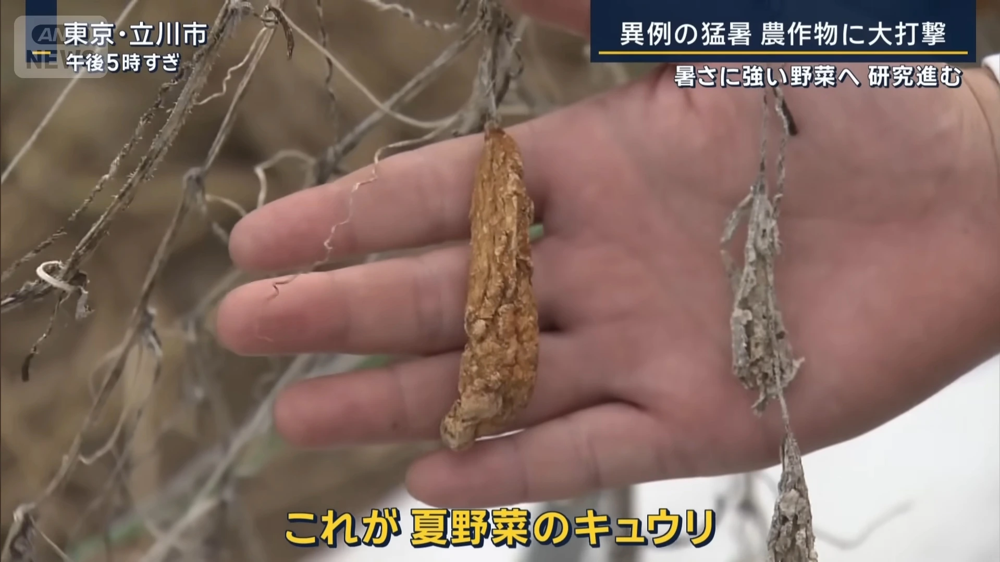

🥒
🔍 クリックで拡大
被害実例 #1
高温ストレスによるキュウリの細胞壁破綻と水分喪失
気候変動時代の新たな作物保護技術の科学的解析
高温ストレスによるキュウリの細胞壁破綻と水分喪失
光合成システムの熱損傷による代謝機能停止

継続的高温による細胞膜の脂質過酸化
現場が体験する高温ストレスの実態
35°C以上で細胞膜の流動性が変化し、酵素活性が急激に低下。特にRuBisCO酵素の失活により光合成効率が70%以上減少。
気孔の強制閉鎖により蒸散冷却が停止。細胞内水ポテンシャルが-2.0MPa以下まで低下し、構造的損傷が発生。
ヒートショックプロテイン（HSP）の過剰産生により、通常の成長関連遺伝子の発現が抑制される。
日本の高温による農業損失額
（気象庁データ2023年）
過去50年間の平均気温上昇
（農業地域平均）
35°C超の猛暑日数
（1980年比+30日増加）
高純度エタノールから最適濃度への希釈プロセス
制御環境下での科学的実証実験
72時間後の生存率と生理活性の定量比較
0.1-8%濃度での細胞膜透過、アルコールデヒドロゲナーゼによる代謝開始
細胞質でのADH酵素反応、NAD+からNADHへの還元反応促進
HSP70, HSP90の発現誘導、タンパク質折り畳み修復機能強化
カタラーゼ、SOD活性上昇、活性酸素種（ROS）の無毒化
葉面散布: 0.1-3.0%
土壌灌注: 5.0-8.0%
最適濃度: 作物により変動（キュウリ: 0.5%, トマト: 1.2%）
予防的: 35°C予報24時間前
治療的: 高温ストレス発現後6時間以内
頻度: 連続猛暑日は48時間間隔
生理的保護: 72-96時間
遺伝子発現: 48時間ピーク
代謝影響: 5-7日間持続
精密農業技術との統合による大規模施用
農家主導による実用化プロトコル開発
AIドローンによる自動散布システム
p < 0.001, n=120区画での再現実験データ
エタノール応答性を高めた品種開発により、さらなる効果向上を目指す
IoTセンサーとAIによる最適施用タイミングの自動判定システム
農業廃棄物からのエタノール生産と現地循環利用システム
世界の穀物生産量
+15%増加見込み
グローバル市場規模
2030年に5兆円
耐熱性向上により
+2°C温暖化に対応
関連特許出願
年間200件ペース